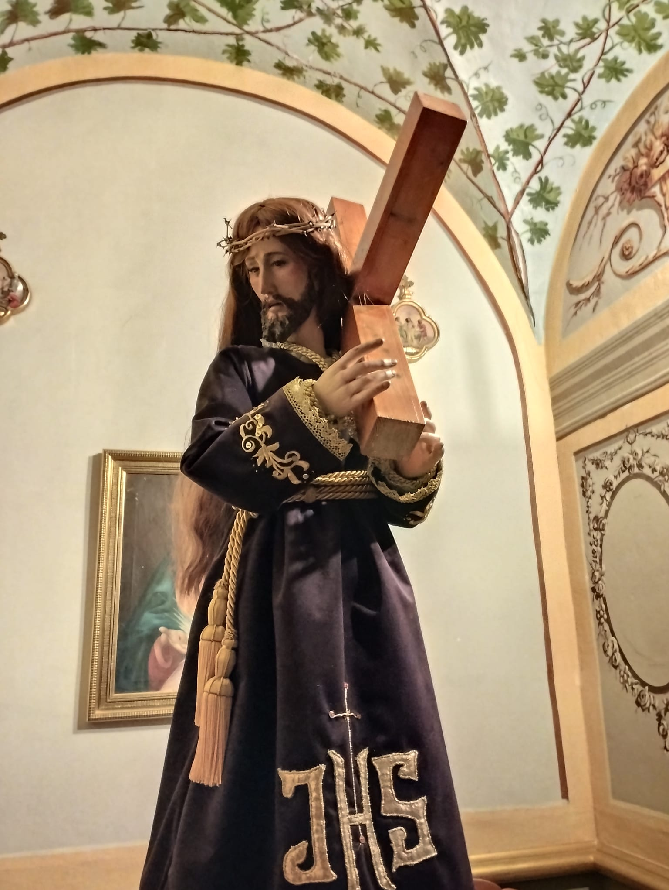
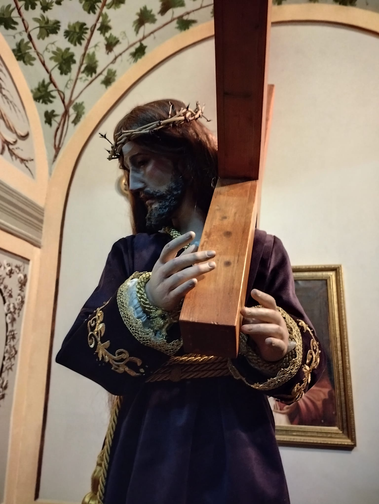

Ntro. Padre Jesús Nazareno
La imagen de Nuestro Padre Jesús Nazareno, con 1 metro de altura, es la más alta de la Procesión de los Niños
Adquirida en 2021 y de autor desconocido. Esta imagen de candelero fue restaurada y policromada por Miguel Gil.
Su túnica de terciopelo morado está delicadamente bordada con aplicaciones y lentejuelas
Además es portada en el trono más pesado de la Semana Santa Infantil ñorera.
 